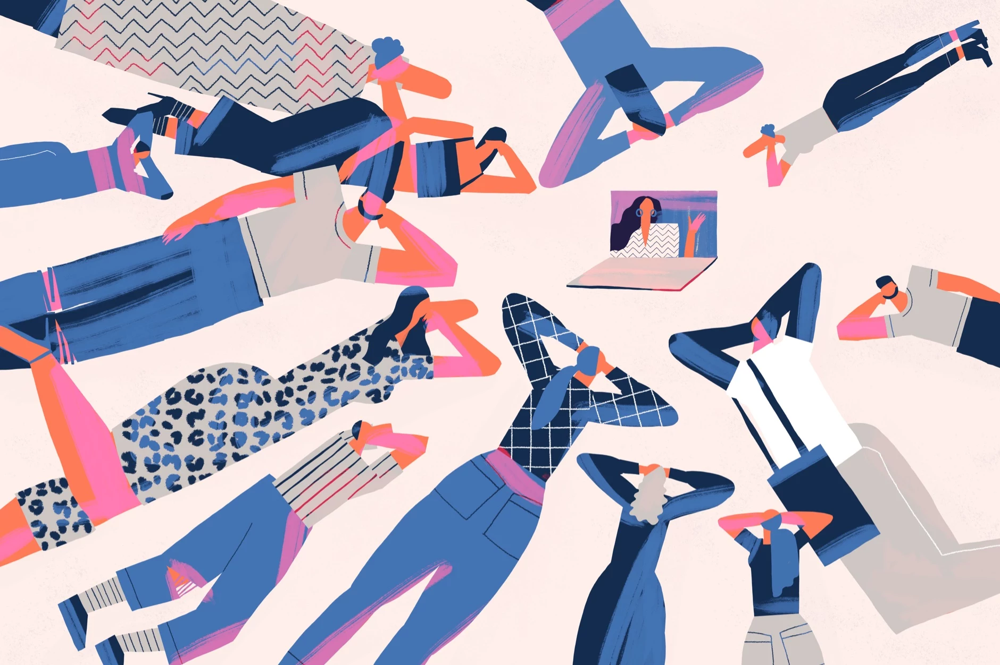

01 Проводите мозговые штурмы
Принцип «одна голова хорошо, а две — лучше» еще никого не подводил. Соберитесь с другими людьми, обеспокоенными той же проблемой, и предлагайте по очереди идеи. Необязательно сразу готовить презентацию и расписывать аргументы. Наоборот, при мозговом штурме важна спонтанность. Нужно говорить все, что приходит в голову, даже самые странные идеи — это стимулирует творческий процесс. Не стесняйтесь, обсуждайте идею с друзьями, родственниками — да хоть с бариста в кафе, пока готовится ваш кофе. Помочь может совершенно неожиданный собеседник.
02 Ищите аналогии
Многие вещи кажутся не связанными между собой — до тех пор, пока вы не примените метод аналогий. Проще всего использовать прямые аналогии — составлять пары предметов, которые чем-то похожи. Иногда удается обнаружить схожие свойства совершенно разных вещей: например, пластика и еды на столе. Так, обладатели Гран-при международного конкурса Lexus Design Award из Японии решили использовать агар-агар — растительный заменитель желатина — в качестве экологичного упаковочного материала потому, что он прочный и отлично тянется. Прямо как пластик.
03 Создайте ассоциативную карту
Нарисуйте схему, в центре которой будет задача, которую вы хотите решить. От нее должны отходить ветви — любые слова, идеи, задачи или другие понятия. Чем более разветвленной получится схема, тем лучше. С помощью ассоциативной карты получится структурировать информацию, которая у вас есть, и увидеть ранее не замеченные связи между ее элементами. Необязательно по старинке пользоваться бумагой и карандашом. Для майндмэппинга (так называется эта техника) есть несколько онлайн-сервисов, например Miro.
04 Задавайте вопросы
SCAMPER — это техника постановки вопросов, стимулирующих появление новых идей.
Каждая буква в аббревиатуре SCAMPER обозначает метод, по которому можно работать с проблемой.
S — substitute
(«заменить»), C — combine («объединить»), A — adapt («адаптировать»), M — modify («модифицировать»), P —
put
to other uses («предложить другое применение»), E — eliminate («убрать» или «свести к минимуму»), R —
reverse («перевернуть»).
Когда задача поставлена, спросите себя, к примеру, чем заменить
отсутствующие части
или какие существующие вещи можно к ней адаптировать.
05 Ловите идеи всегда и везде
Лучшие идеи приходят в неожиданных местах: например, когда мы уже лежим в кровати и готовимся ко сну. Согласно методике «ловушка для идей», на такой случай всегда нужно держать под рукой ручку и блокнот, чтобы все быстро записать. Вариация на тему называется «автобус, кровать, ванная» — это те самые места, где может застать врасплох озарение. К записанному лучше вернуться через некоторое время, обдумать все еще раз и сделать выводы о том, где и как идею можно применить. Сразу же анализировать и подвергать сомнению идею не стоит.